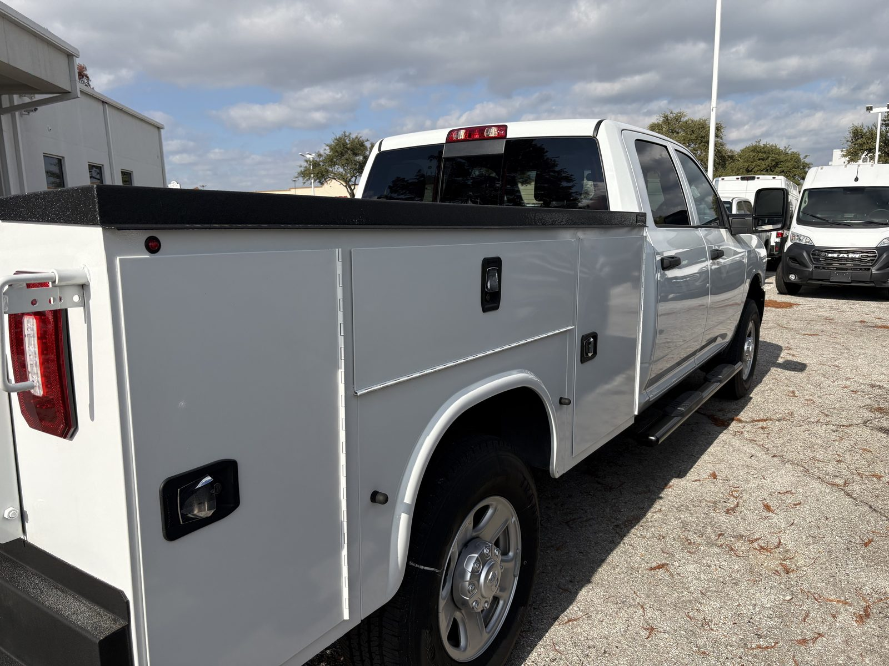
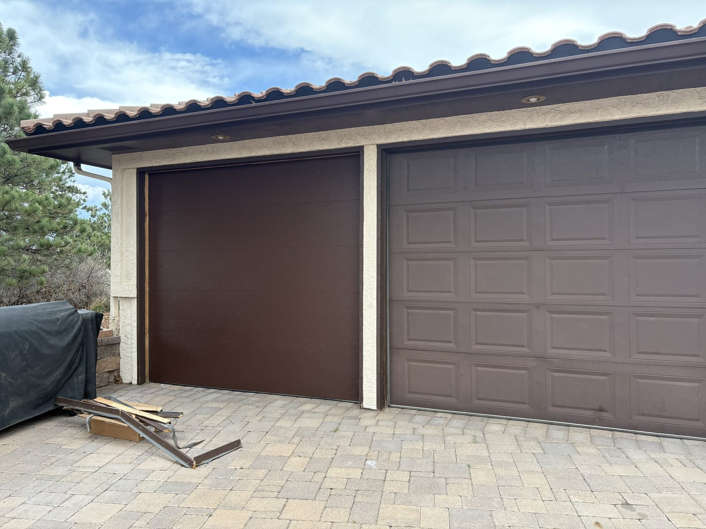

Coverage
Colorado Springs first
Service routes extend through Monument, Fountain, Falcon, Peyton, Woodland Park, Manitou Springs, Black Forest, and nearby communities.
Springs Garage Door Services is built around direct accountability and 6+ years of hands-on garage door experience. Customers are not looking for vague promises when a door is off-track, a spring breaks, or an opener stops working. They want fast answers, honest recommendations, and work that feels dependable once the door goes back into service.
Service routes extend through Monument, Fountain, Falcon, Peyton, Woodland Park, Manitou Springs, Black Forest, and nearby communities.
Monday through Friday from 7am to 8pm. Saturday and Sunday from 8am to 8pm.

When customers compare providers, they want to know who is responsible for the work, how decisions get made after inspection, and whether communication will stay clear from estimate to completion. That confidence is easier to earn when the company can point to 6+ years of direct, hands-on experience in the field.
Eyal leads the business around practical guidance, not pressure.
That matters when a homeowner is deciding whether a spring can be replaced on its own, whether panel damage is worth repairing, or whether a full door upgrade makes more financial sense. Springs Garage Door Services is positioned to make those decisions easier with direct communication and a clear explanation of what comes next.

Customers need more than a service list. They need confidence that the company will diagnose the right issue, explain the options, and leave the door operating safely.
Call, email, and quote requests are structured to gather the details that help route the job correctly without wasting time.
Repair, replacement, opener upgrades, and maintenance all begin with understanding the condition of the door, the hardware, and the customer goal.
The business keeps its address, phone, hours, and coverage area visible so customers know where service is available and how to reach it.
The company story should match the actual service experience: easy contact, clear recommendations, and work that ends with a properly operating door.
Customers share the issue, property location, and urgency so Springs Garage Door Services can prepare for the right type of visit.
The door, opener, springs, panels, and related hardware are reviewed so the recommended next step is based on condition and use, not guesswork.
Repairs, replacements, and installations finish with a functional test and safety check so the customer knows the door is moving correctly and safely. If anything needs adjustment after the job, Eyal stays reachable.
Those channels reinforce that Springs Garage Door Services is a real local business with reachable contact points, not a generic lead-generation page.
The About page should lead directly into action. Customers who trust the company story should be able to move straight into a call or quote request without friction.